L’incroyable histoire réelle de Jalna
Mars 2015
Aperçu privé — code d'accès requis
chats de race SnowShoe, petit élevage parisien en devenir
Mars 2015
Février 2015
Jalna est morte aujourd'hui comme sa sœur la semaine dernière.
Le véto va la piquer puis la faire incinérer aujourdhui.
J’ai pas tout compris, sous le choc en apprenant la nouvelle, il dois me donner des papiers plus tard et m’expliquer.
J’ai juste retenu qu’il aurait fallu tester et se renseigner parce que les visites classiques chez le vétérinaire ne détectent pas ça, mais elle était de toute manière condamnée par la PIF (péritonite Infectieuse Feline) comme sa sœur dans tous les cas.
Plutôt que des images glauques de ces derniers instants voici son dernier film.
Je n’ai pas de mots. Je suis sidéré. Ma peine est immense. Je la cherche partout. C’est horrible
clic ici pour voir le film en plein écran
La suite ? Je ne la connais pas. Mais vous pouvez laisser votre mail sur la liste de suivi automatique du blog et vous serez alors informé à la prochaine publication.
J'ai ré-ouvert les commentaires du blog.
Merci pour vos condoléances ici que je relirai au bon moment.
Libellés : Jalna
Décembre 2014
Bonnes fêtes de fin d'année et bonne année à venir par avance de la part de Jalna 4 mois arrivée hier.
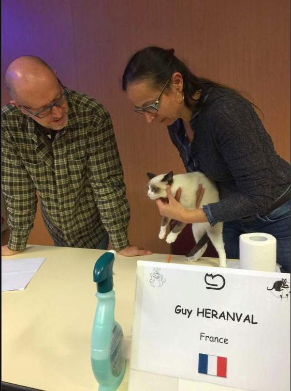
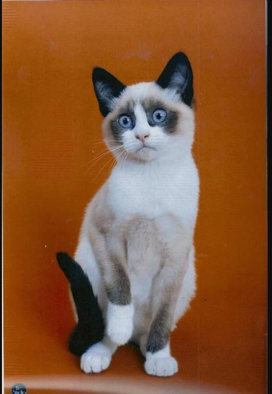
Hier nous étions le 13 décembre.
Hier Jalna gagna un titre dans une exposition.
Hier Jalna quitta sa famille chat et éleveur.
Hier Jalna découvrit son nouveau chez elle.
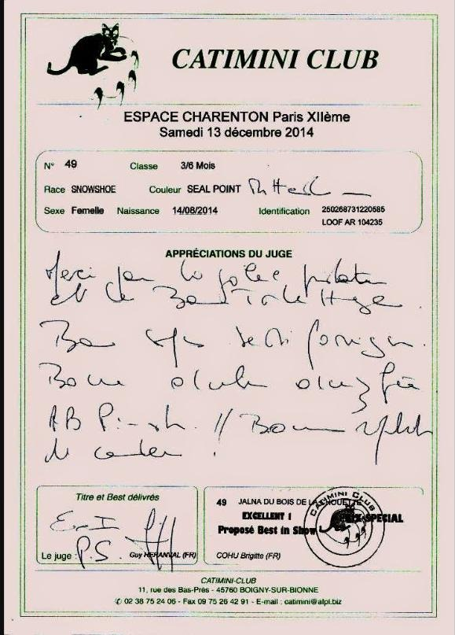
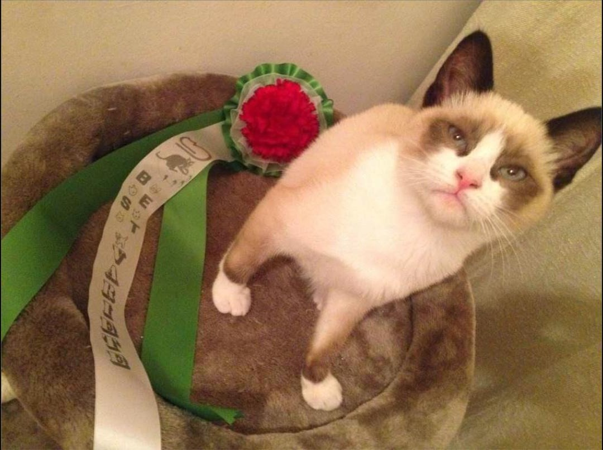
Aujourd'hui, nous sommes le 14 décembre.
Aujourd'hui c'est l'anniversaire de Jalna : 4 mois.
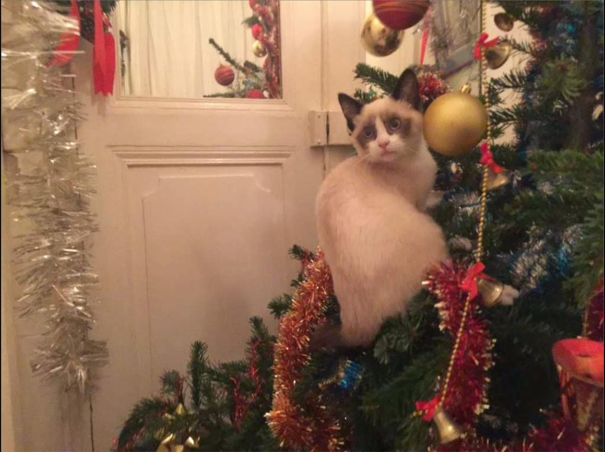
Demain ? Pour savoir, suivez ce blog (en bas de page).
Libellés : Anniversaire chaton Cocarde Concours Exposition femelle Jalna
Décembre 2014
Comme recevant une boîte de chocolats, ne sachant qu’en faire, autant la partager ici.
Prendre le temps d’apprendre des choses sur ce qu’on aime est un pur bonheur. Surtout parmi des étudiants et des enseignants bienveillants très intéressants. J’ai aimé ces quelques semaines d’études félines.
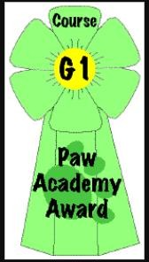
Tant pis si le diplôme de validation est une cocarde ridicule reçue de PawPeds Academy. Ça fait plaisir. Et puis au moins cette cocarde est reliée à la liste des personnes la méritant : clic dessus pour chercher « Max Bouche » dans la zone FR (France).
Novembre 2014
Pour mon devoir PawPeds, j'ai échangé par téléphone avec un élevage Français qui débute avec sa 4ème portée en cours. En fait c'est le seul élevage. Un plus ancien ayant arrêté son activité. Et d'autres en construction n'existant pas encore.
Dimanche 9 novembre, je suis allé en Sologne partager un thé avec cet élevage. Ils y avait d’adorables chatons et du bon thé. J’avais apporté un cake au citron et des doudous pour chats …
Bref j’ai craqué et réservé une petite femelle «Jalna». Très timide. Tout juste deux mois. Apeurée par les humains. Nous avons convenus qu'ils la gardent en famille jusqu'à 4 mois. Puis la présentent à une expo spéciale chaton, puis je la récupère après (samedi 13 décembre à l'espace Charenton).
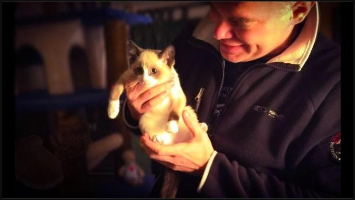
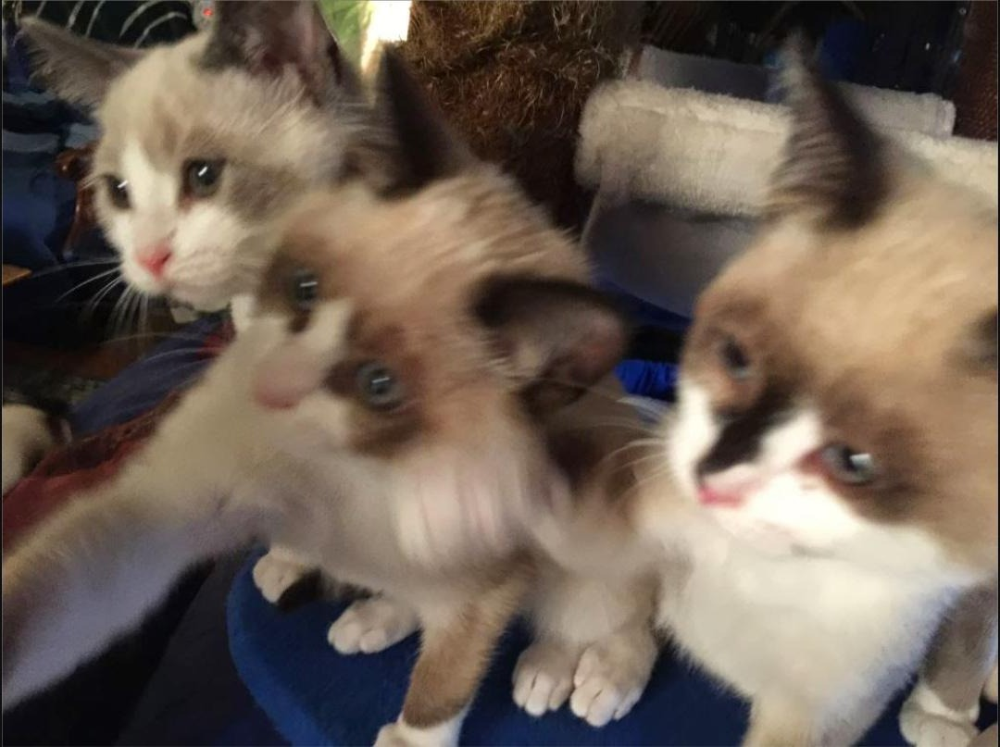
Jalna — Jalna dans mes bras — Jalna au milieu entre frère et sœur
Contre la maison de l'éleveuse, il y a les chatteries les mâles, où Brigitte l'éleveuse va chercher le papa de Jalna sur la photo ci-dessous. Les chatteries des femelles sont plus loin contre un autre mur. Ainsi pas de reproduction incontrôlée. Tout le monde dans sa cage ! Son papa a vraiment un masque de visage magnifique.
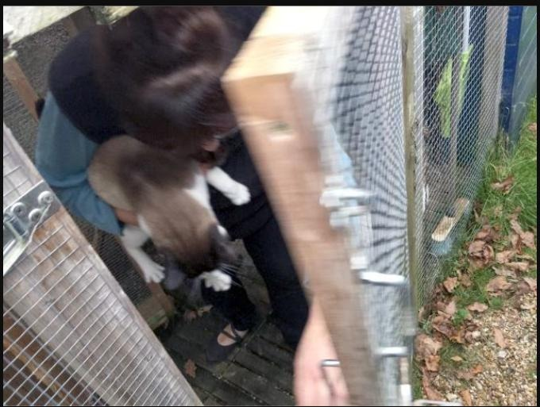
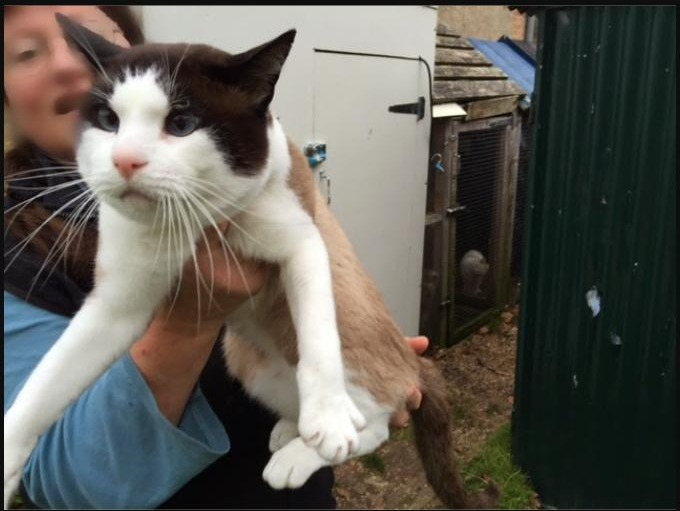
Voici un lien sur cet élevage des parents de Jalna: snowshoesduboisdelachouette.blogspot.fr
Jalna est issue de parents étrangers voisin :
Vanda la maman est Italienne (Vanda Del Doge, Championne de France)
Teddy le Papa est Anglais (Frostisox Alpha Teddy Bear, Grand Champion International)
Si une personne a connaissance d'un beau et prometteur chaton mâle bien né, de race SnowShow, souhaitant fonder un foyer d'amour avec Jalna, il ne le regrettera pas !
Novembre 2014
PawPeds est né en l’an 2000 (pawpeds.com). C’est un site d'information sur l'histoire des chats de race, les programmes de santé coordonnés mondiaux, et l'éducation des éleveurs. C’est aussi une base de données mondiale sur les pédigrées des différentes races qui permet de calculer le coefficient de consanguinité et d'analyser un pedigree.
Pawpeds c’est également une académie du chat à laquelle j’ai été un heureux participant (pawpeds.com/pawacademy). Chaque semaine, il y a des choses à lire et des exercices à rendre. Pour la quatrième semaine du cours G1 en français, il y a 73 chapitres à lire et deux exercices. La question 4.2 comporte cinq point et notamment la question - Rédigez un texte relatif à l'origine d'une race et son évolution jusqu'à aujourd'hui, ce devoir peut être réalisé seul ou en petit groupe de deux ou trois personnes ...
En discutant sur facebook, les correcteurs ont demandé à ce que cela soit une race que l’on ne connaît pas ou peu. J’ai alors passé une soirée à regarder toutes les races. Puis choisissant le SnowShoe, j’ai demandé si quelqu’un voulait traiter cette race avec moi. Il y avait des races retenues très intéressantes. Certaines en cours de création n’existant pas encore, d’autres avec des chats peu ordinaires : des oreilles étranges, des poils frisés, parfois sans poils, etc. Personne n’a été intéressé par ma race et j’ai donc traité ce sujet seul.
Voici quelques extraits de ma réponse à ce devoir :
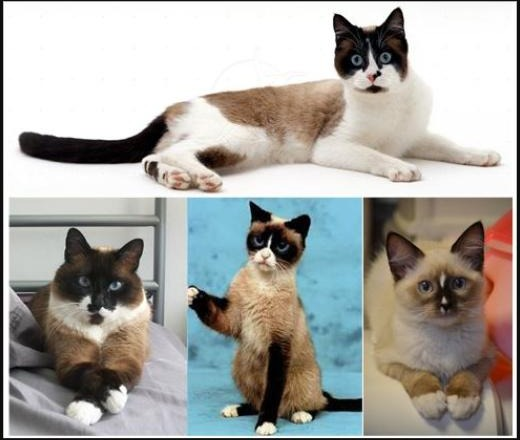
Une race de chat, c’est une histoire qui remonte le temps. De la race d’aujourd’hui à celle d’hier présentée pour la première fois. On remonte aux premières reconnaissances par les associations de chat. On remonte au premier héro qui l’a découverte, ou encore aux premiers écris sur ce félin. Voilà où naît l’origine géographique et le mythe d’une race.
Il existe néanmoins quelques rares exceptions où l’origine du félin est parfaitement maîtrisée et reconnue dans le cadre de races créées par l’homme. Est-ce mieux ou moins bien ?
De tels chats ne sont alors pas d’étonnants mystères à découvrir. Mais le fruit d’un rêve humain du chat idéal, une création qui ne déçoit pas. Ici pas de maladies imprévisibles, pas de faiblesses comportementales, pas de vices cachés intergénérationnels qui resurgissent, bref pas de surprise. On est en face du chat idéal qui ne triche pas sur ses qualités, puisqu’il a été créé pour ça. Un tel chat existe. Sa race se nomme le SnowShoe.
En grec Philos est amour, et Adelphos le frère. Le nom de Philadelphie signifie amitié fraternelle. De ce centre historique, culturel et artistique majeur des États-Unis, situé entre NewYork et Washington, est né dans les années 60 la race SnowShoe. Et c’est en effet un modèle d’amitié fraternelle entre humain et félin.
Alors ce chat idéal, comment est-il donc ? Les qualificatifs qui suivent sont les mots officiels de sa race.
Trois tailles selon le Loof. Et bien le chat idéal est … Moyen pour un poids félin classique de trois à cinq kilos. Ses yeux sont bleus. Il existe trois types de comportement pour un chat : le paisible (trop absent ?), le démonstratif (trop présent ?), et le sentimental (le parfait complice de l’humain). Le SnowShoe est un sentimental. Côté toilettage, c’est simple et pratique : il n’en réclame aucun ! Sa fourrure est courte et très douce et soyeuse. Les contours de sa tête sont arrondis, ses yeux et plus généralement son corps est harmonieusement proportionné. Celui qui cherche de grandes oreilles ou d’autres singularités corporelles se tournera ailleurs que vers la race idéale de la normalité. Le SnowShoe est musclé, agile, tendre, équilibré, cool, élégant. Ce ne sont pas des mots commerciaux mais bien ceux qui le décrivent officiellement. Toujours selon le LOOF, les enfants n’ont rien à redouter de lui et c’est le chat idéal pour un écrivain.
Côté robe, le SnowShoe est un colourpoint, ce qui veut dire que le bout des pattes, la queue et sa bouille sont plutôt d’une couleur sombre pour un corps plus ou moins panaché de blanc. Les couleurs sont seal (noir), bleu (gris), chocolat (brun) ou lilas point (beige rosé très pale). Mais son extraordinaire signe distinctif est bien ses pieds blancs, toujours, d’où son nom SnowShoe (soulier de neige). Un autre signe distinctif est un "V" inversé en blanc requis entre les yeux.
Il est, cette fois selon l’encyclopédie, extrêmement vif, s’entend bien avec les autres animaux, avec un caractère bien trempé. Joueur et bon compagnon des enfants, il est doux, «très affectueux», fidèle et très attaché à son propriétaire. C’est un des chats les plus intelligents qui s’adapte facilement, des vidéos sur internet de parcours d’agility de SnowShoes montrent bien ceci.
On connaît parfaitement les origines du chat idéal SnowShoe issu de trois races : l’Oriental Siamois, l’européen (comme son nom ne l’indique pas) Sacré de Birmanie, et l’American Shorthair. Si le SnowShoe n’hérite pas de la fragilité des Siamois au taux élevé de mortalité, ni de leur tête pointue. Il n’a pas pris non plus les poils plus longs du sacré de Birmanie qui sont un petit calvaire d’entretien. Il n’a pas non plus le côté rustique aux poils un peu crépus et rêches de l’American Shorthair. Mais il possède de ce dernier l’athlétique américain joueur et chasseur, grand ami de l’homme, qui protégeait ses stocks de céréales des rongeurs ; il prend du Sacré de Birmanie sa douce affection et son côté sociable très adaptable ; de même du Siamois, il prend le caractère de ce fin asiatique si intelligent et collant aux humains …
Voilà d’où vient et ce qu’est aujourd’hui le SnowShoe : un bon chat attachant qui n’a rien d’exceptionnel si ce n’est d’être exempt de défaut, et où chaque spécimen est unique contrairement aux races où ils sont identiques (siamois, chartreux …)
Ce devoir a été envoyé dimanche 2 novembre. Et il a été validé deux jours plus tard par Mari Ambra, l’une des passionnantes enseignantes de l’académie PawPeds.